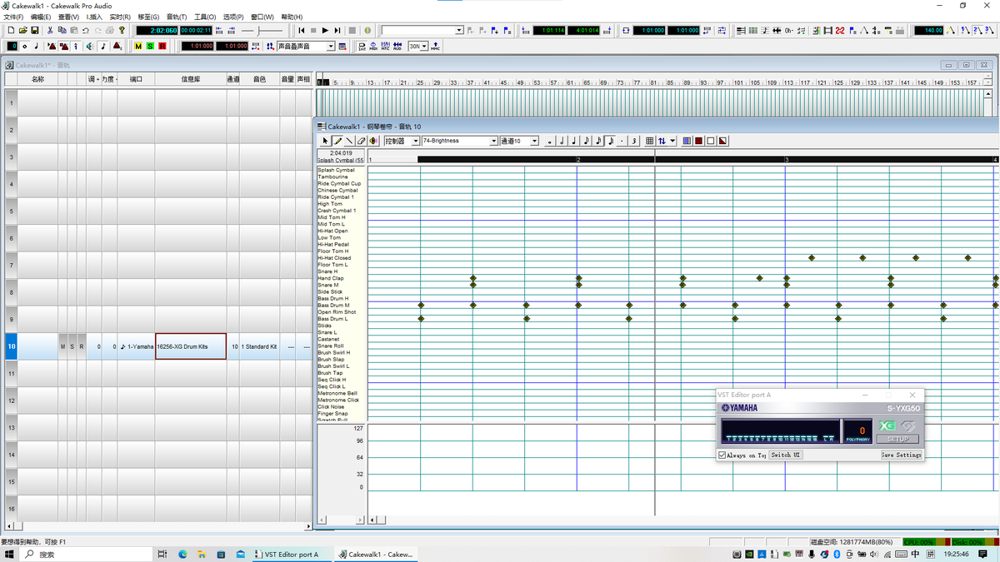

@DraTohru_XLN 可以分几层写，guitar可以试试x-x- xx-x x-x-或者x--- x-xx --x-，pad写一些不错的进行用的时候再拖进去，例如♭VImaj9 → ♭VIIsus2 → i(add9)，Imaj7#11 → iii7 → IVmaj9，vi → IV → I → Vsus2，i → ♭VI → dim → Valt，♭VI → ♭VII → i，i → ♭VI → iv，vi → IV → I → sus2。


一直都有自己做耳コピ或者编曲的想法
只是现在我发现要入门应该不是登天级别的地狱难度
虽然要做得好还是要付出努力，比如精调XG控制器或者FLStudio这么高深的玩意
先确定好目标的BPM，用Ch10写一些基本的鼓点，之后的各个乐器的音符就可以跟着Ch10的节奏点来写，或者“多次倍频”。 https://t.co/nr4kXafLGo
只是现在我发现要入门应该不是登天级别的地狱难度
虽然要做得好还是要付出努力，比如精调XG控制器或者FLStudio这么高深的玩意
先确定好目标的BPM，用Ch10写一些基本的鼓点，之后的各个乐器的音符就可以跟着Ch10的节奏点来写，或者“多次倍频”。 https://t.co/nr4kXafLGo